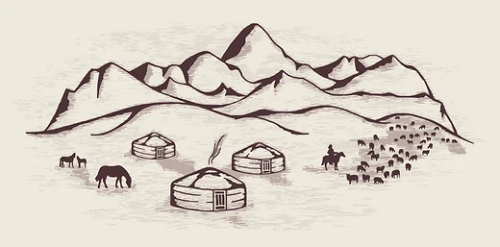
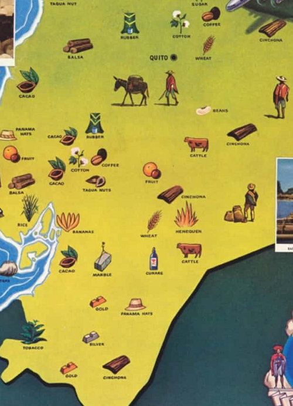
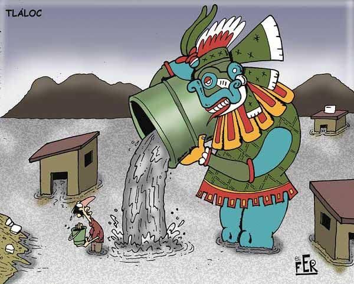
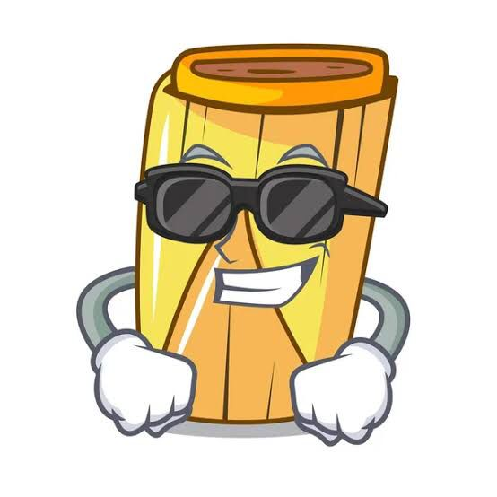
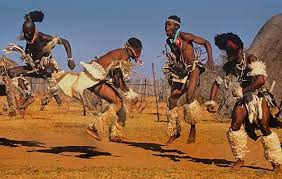
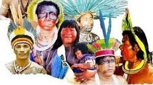
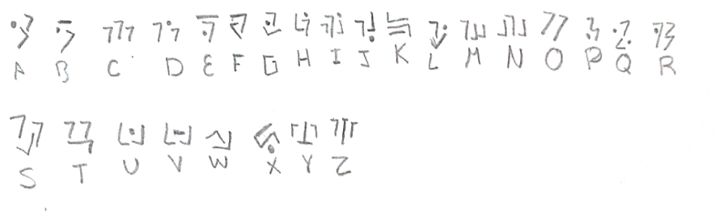

Los Kanomiyas eran un grupo de nómadas provenientes del sur del continente americano, debido a lo demás grupos nómadas y a sus constantes amenazas de ataque se dirigieron rumbo hacia el norte, a las pocas semanas se asentaron en un lugar cercas de lo que actualmente se conoce como Ecuador, debido al clima cálido y a la abundante fauna y flora de este lugar, al poco tiempo empezaron a hacer actividades y comerciar con otras poblaciones cercanas, pasaron algunos años y desarrollaron un buen ejército, pero al querer atacar a las culturas rivales terminaron siendo derrotados una y otra vez, al final dejaron de lado su ejercito y se concentraron en las artes y esculturas que actualmente se encuentran perdidas en todo Ecuador.

Ubicación de los Kanomiyas
Esta cultura se asentó en la mayor parte del ecuador gracias a la buena fauna y flora de este lugar, y también a que las culturas vecinas no eran agresivas pudieron adaptarse de mejor manera a esta locación, aunque algunos pequeños grupos de Kanomiyas exploraron mas rumbos hacia el norte, algunos siendo aceptados en otras culturas y otros no tuvieron tanta suerte.

Creencias de los Kanomiyas
Eran politeistas, tenían varios dioses, rendían culto a la lluvia, a los astros y otros fenómenos naturales.
Como la mayoria de culturas y como actualmente se sigue haciendo, le rendian tributo bailando al dios Tlaloc para que lloviera. El nombre correcto de Tlaloc es Tlalloccantecuhtli “señor del lugar donde brota el vino de la tierra”.
Se entiende también por “agua de vida” o vino, la sangre que ofrendan los hombres y los dioses, la sangre que cae en gotas de los miembros punzados con armas punzocortantes.

Tambien llevaban tributo al dios del tamal. El imponente tamalongomaru, quien era el responsable de que los tamales salieran bien. Si alguien se disponia a hacer tamales, era obligatorio el rendirle tributo. La manera en que le rendían tributo era tirando tamales al rio, pero tenian un problema, que los tamales tenian que estar bien hechos y no podian hacerlos bien si no le rendian tributo, pero no podian rendir tributo sin tamales bien. En fin, si alguien se disponía a hacer tamales tenia que esperar alrededor de 3 meses para que salieran bien. Despues de un tiempo se dieron cuenta que salian bien sin este dios, ademas de que sis demas dioses tambien coincidian con medios naturales que surgían como su nombre lo dice “naturalmente” y dejaron de matar gente sin razon o arrojar tamalitos o bebés al rio. Y asi se empezo el ateismo, no lo digo yo lo dice la ciencia.

La diosa karuiz
Esta diosa no era diosa de nada, literalmente de nada. Se desconoce quien se la haya inventado y se desconoce por que la población creia en ella.
Los hombres mas simps de la población le rendian tributo sacrificandose a si mismos haciendose varias cordaturas en el cuerpo hasta morir desangrado, esto con la esperanza de que la diosa algún dia bajara y escogiera a un hombre de la tribu, con quien formarian un reino esplendido donde no habria problemas de pobreza, alimentación, o educación (algo como lo que todos los gobiernos prometen) y asi el pueblo viviria en feliz armonia.
Cabe memcionar que a pesar de mas de 1000 intentos nunca bajo la diosa y los pobladores decidieron no seguir con esa tradición de sacrificar mas pobladores, (NOOO MI COMPA pero el simpeo sigue hasta la fecha y tal vez nunca vaya a desaparecer).
Tradiciones de los Kanomiyas
Una de las tradiciones es:
Cada 6 meses en día 15 las personas hacen un círculo centre ellos y en medio se pone la mascota ya que para ellos es sagrado y representa salud, dinero y amor en la familia, después de eso se hace una fiesta en la cuál se comen diferentes tipos de alimentos como carne, verduras, pasta entre otras, cada persona se viste del color del perro representando su religión.
Debido a su grande catalogo de dioses cada sacerdote crea y promueve diversas tradiciones pero siempre y cuando no afecten a sus demás compañeros sacerdotes, hubo una ocasión en que un sacerdote se enfrento a otro debido a sus constantes molestias y por ellos los dos grupos de sacerdotes y sus seguidores fueron desterrados.

Sociedad de los Kanomiyas
Respecto a sociedad contaban con un sacerdote por cada dios, que eran algo asi como subreyes a los que el pueblo les rendia tributo, les daban ofrendas, etc. Tenian un total de 50 sacerdotes, porque se inventaban dios casi para todo, como se demostro anteriormente.
Dento de sus actividades llevaban la agricultura, cultivando maíz principalmente y cacao, y varias especies mas de semillas.
Cazaban animales y los cuidaban para reproducirlos, como vacas, gallinas entre otros. Y los cazados como venados, bufalos entre otros. Tambien realizaban pesca, ya que se ubicaron cerca de los rios.
Todos los domingos salian entre los mismos pobladores a poner puestos donde vendian articulos de barro como caserolas, platos, vasos y algunos instrumentos decorativos. Asi tambien como comida, semillas, pescados, etc. Donde realizaban los famosos trueques que en su mayoría eran desventajosos para alguna parte del trueque. De ahi conocemos los famosos tianguis del domingo.

Platillos de los Kanomiyas
Entre los platillos principales de los Konomiyas están las ensaladas de frutas, la carne de armadillos a las brasas, usualmente en las bodas entre los konomiyas de comida suelen haber fogatas con carne al fuego. Los mariscos son esenciales en su dieta, debido a sus grandes beneficios
Lenguaje de los Kanomiyas
Gracias a piezas de barro y uno que otro jeroglífico que fueron encontradas en todo Ecuador se pudo descifrar el abecedario Kanomiya el cual se muestra a continuación:
